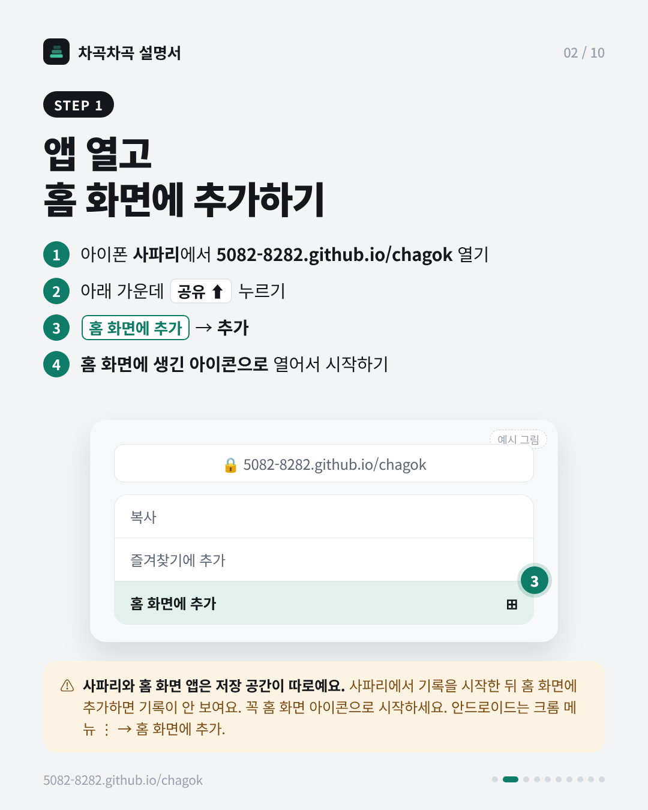
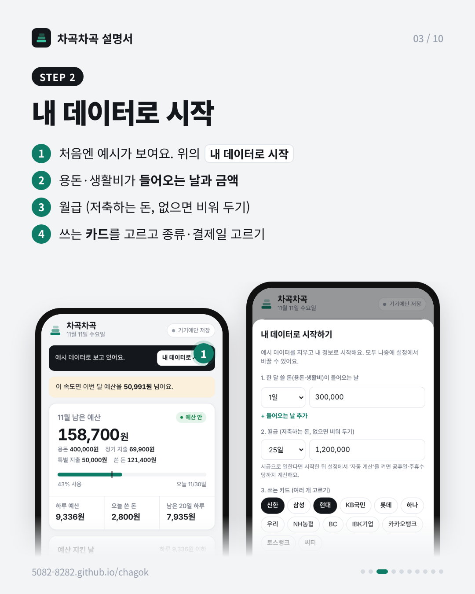
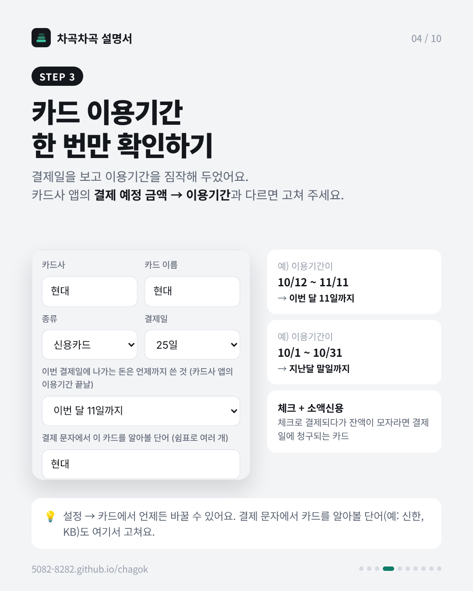
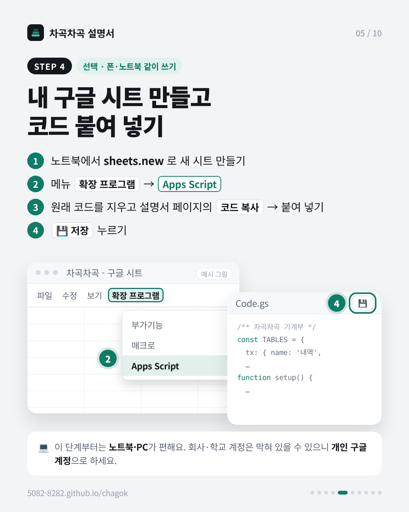
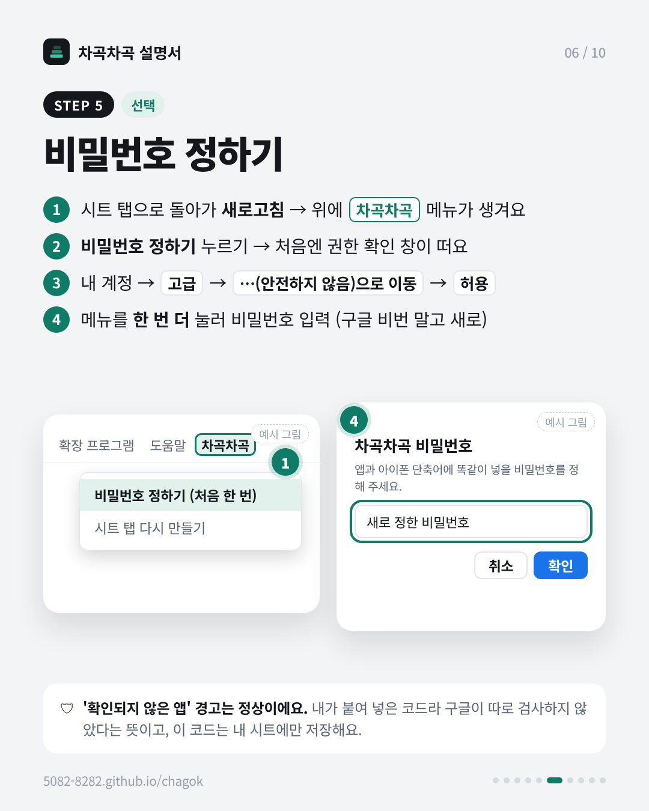
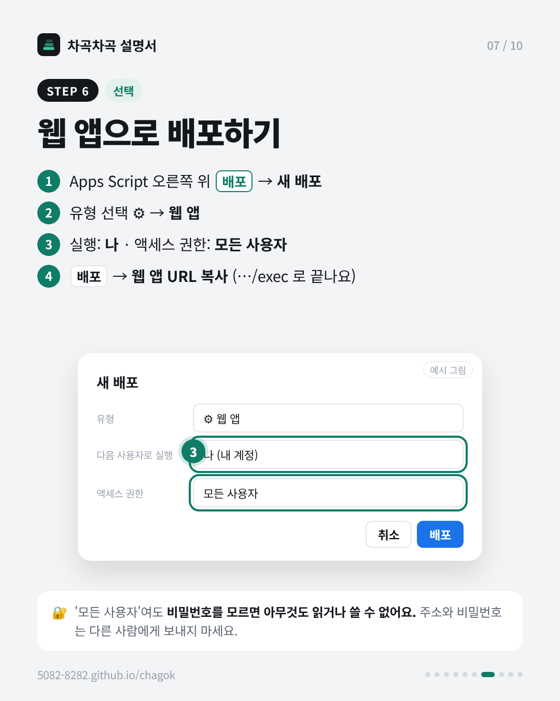
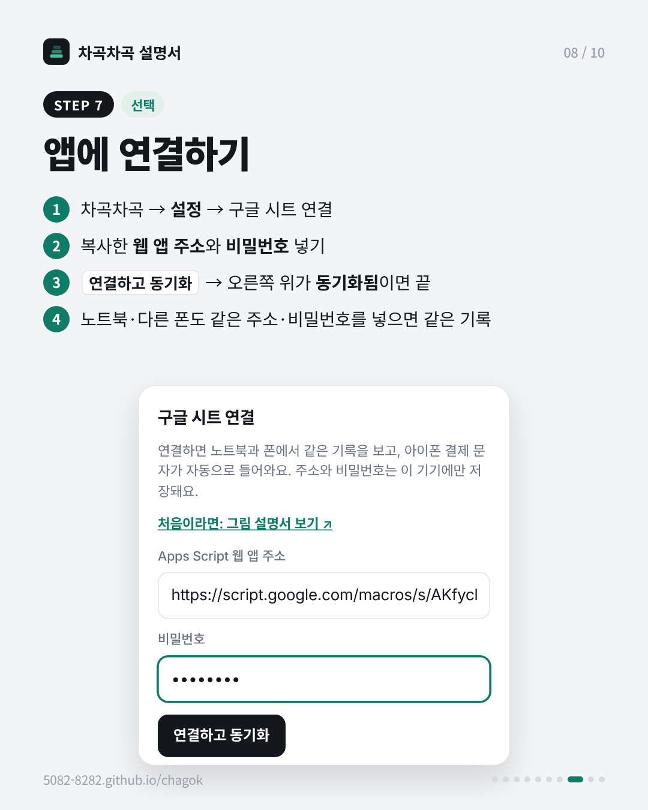
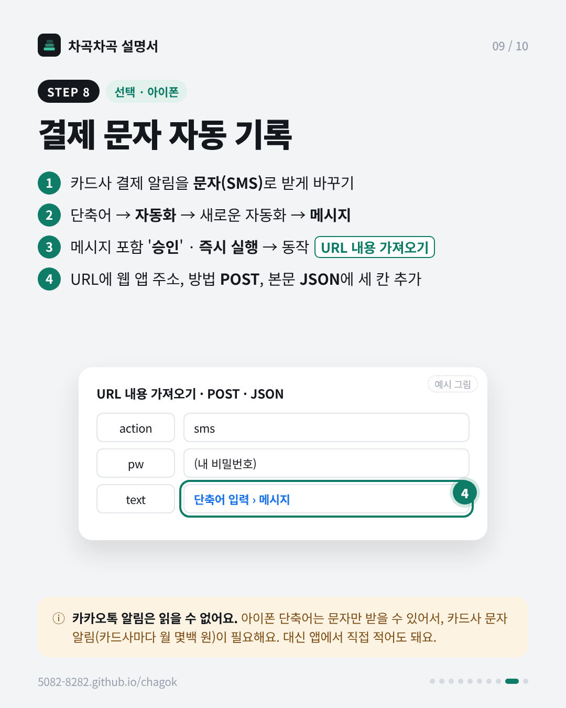
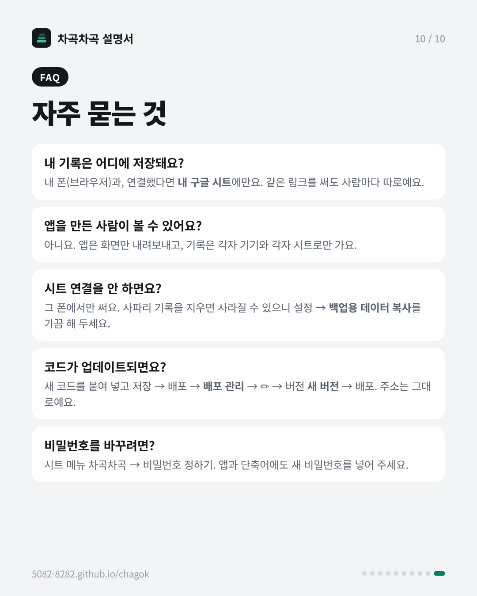

차곡차곡 설명서
링크 하나로 각자 자기 가계부를 써요. 기록은 내 폰과 (연결했다면) 내 구글 시트에만 저장돼서, 같은 링크를 써도 다른 사람과 섞이지 않아요.
1~3단계만 해도 바로 쓸 수 있어요. 4단계부터는 폰·노트북에서 같이 쓰거나 결제 문자를 자동으로 받고 싶을 때만 하면 돼요. 이미지를 길게 눌러 저장하면 친구에게 그대로 보낼 수 있어요.








